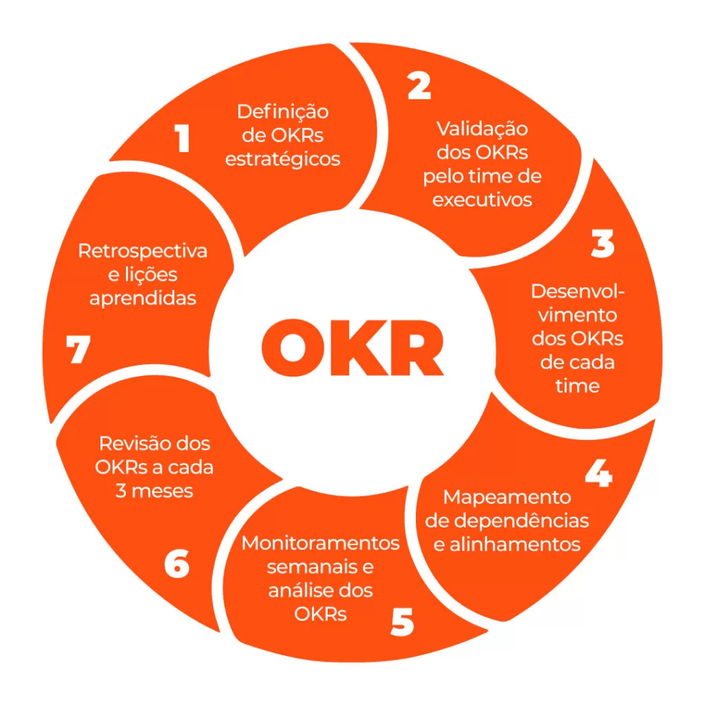
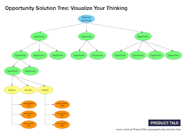

OKR (Objectives and Key Results) é um framework de definição de metas criado pela Intel e adotado por diversas empresas do Vale do Silício, como Google, Twitter, LinkedIn, Dropbox e GoPro

Uma árvore de soluções de oportunidades representa visualmente a ligação entre resultados, oportunidades e soluções. O ponto de partida para qualquer equipe voltada para resultados é, obviamente, o resultado. A partir desse resultado, você mapeia as oportunidades que poderiam impactá-lo diretamente.